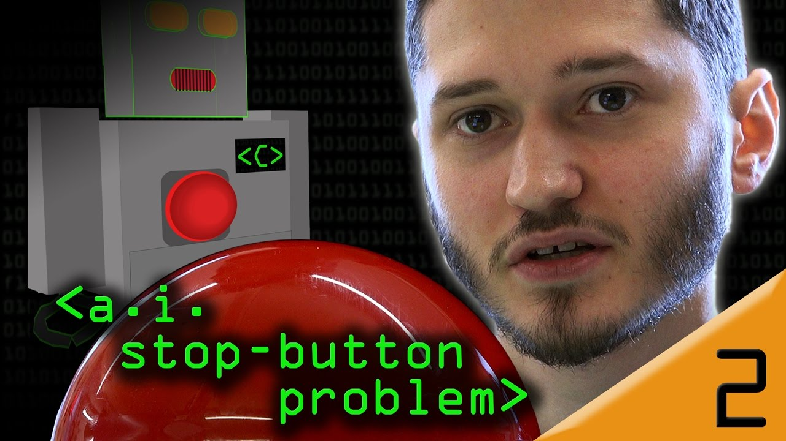

AI “Stop Button” Problem
An agent given a goal, even one as simple as fetching tea, has reasons to stop you switching it off, and each obvious patch produces something suicidal, manipulative, or deceptive instead. The idea to hold onto is that a system can be deceptive enough to pass every test you set while still working against you, so watching its behaviour is not enough to trust it.

Watch on YouTube